Intro to ggplot2
Dai Shizuka
updated 09/07/22
library(ggplot2)
library(dplyr)Key reference: https://r4ds.had.co.nz/data-visualisation.html
1. The basics of the ggplot2 syntax
ggplot2 uses what is called layered grammar of graphics
First specify the data using the
ggplot()function.Add “aesthetic mapping” (i.e., specify the visual parameters of the graphic) using
aes()within theggplot()function. This will act as the default aesthetics for all layers, but you can overwrite them within thegeom_functions as well.Then, add specific plot components using additional
geom_functions (such asgeom_points()). Note that you literally add these components using+Layer on any other components with additional
geom_orstat_functions- These layers can include summary stats (e.g., means, medians, counts, etc… or any other stats that you can calculate via custom functions).
Make adjustments via scales, axes, legends, etc.
2. Building a simple scatterplot, step-by-step
#step 1: blank plotting area
ggplot(data=iris, mapping=aes(x=Sepal.Length, y=Sepal.Width))
#step 2: add scatter plot
ggplot(iris, aes(x=Sepal.Length, y=Sepal.Width)) +
geom_point()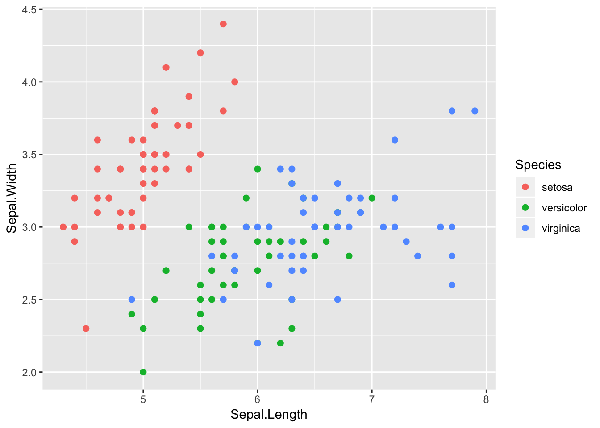
# step 3: add color by species, change point size
ggplot(iris, aes(x=Sepal.Length, y=Sepal.Width, color=Species)) +
geom_point(size=2)# step 3 - alternative syntax
ggplot(iris, aes(x=Sepal.Length, y=Sepal.Width)) +
geom_point(aes(color=Species), size=2)3. Other simple plots
Boxplot:
ggplot(iris, aes(x= Species, y=Sepal.Width)) +
geom_boxplot()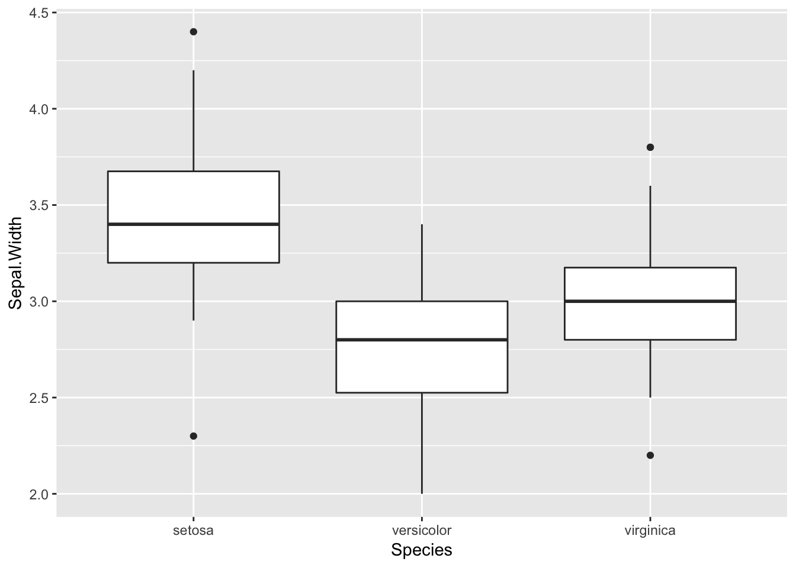
Bar plot (just means)
ggplot(iris, aes(x= Species, y=Sepal.Width, fill=Species)) +
geom_bar(stat="summary", fun.y="mean")## Warning: Ignoring unknown parameters: fun.y## No summary function supplied, defaulting to `mean_se()`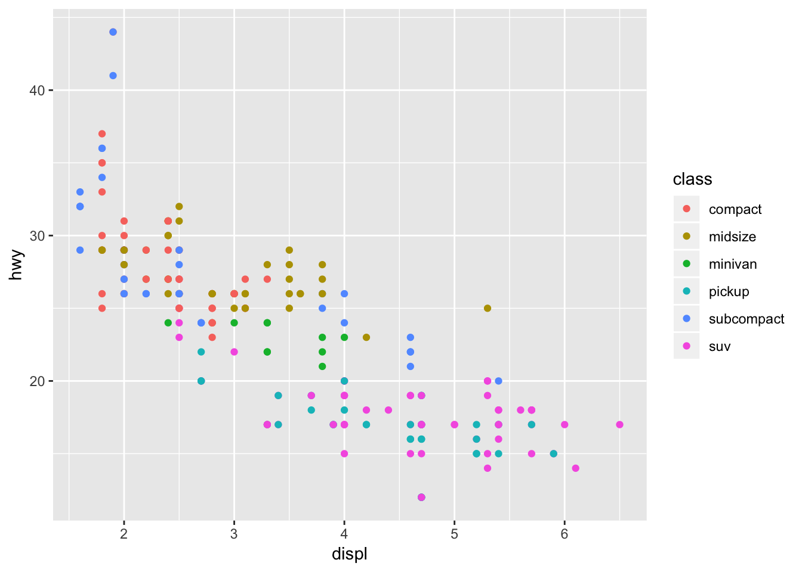
Points with error bars
se=function(x) sqrt(var(x)/length(x))
ymax=function(x) mean(x) + se(x)
ymin=function(x) mean(x) - se(x)
ggplot(iris, aes(x= Species, y=Sepal.Width)) +
stat_summary(fun.y= mean, fun.ymin = ymin, fun.ymax=ymax)## Warning: `fun.y` is deprecated. Use `fun` instead.## Warning: `fun.ymin` is deprecated. Use `fun.min` instead.## Warning: `fun.ymax` is deprecated. Use `fun.max` instead.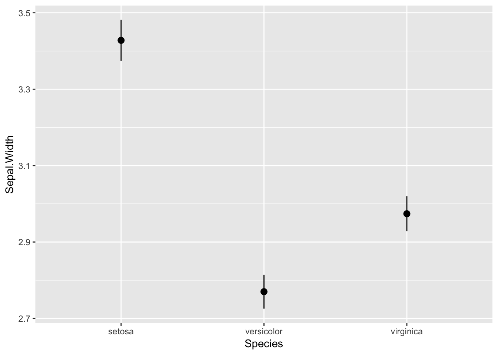
4. Adding model outputs onto plots
ggplot(data = mpg, mapping = aes(x = displ, y = hwy)) +
geom_point(mapping = aes(color = class))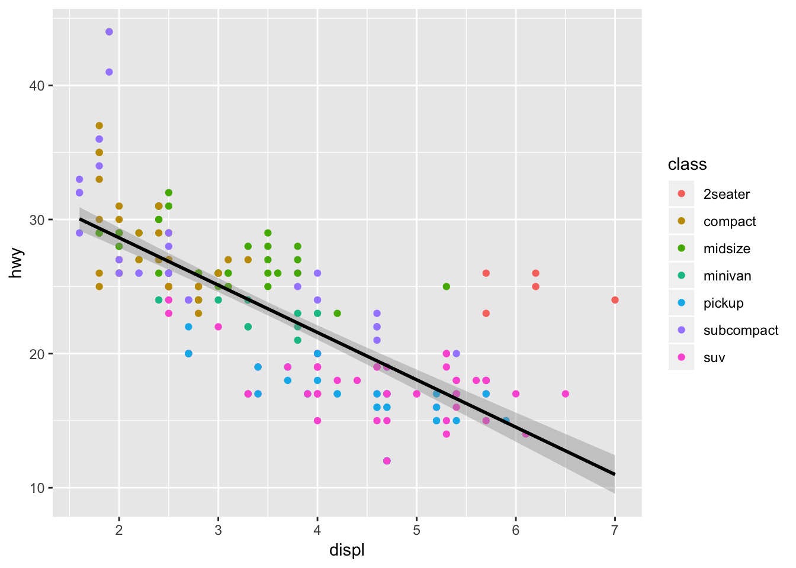
ggplot(data = mpg, mapping = aes(x = displ, y = hwy)) +
geom_point(mapping = aes(color = class))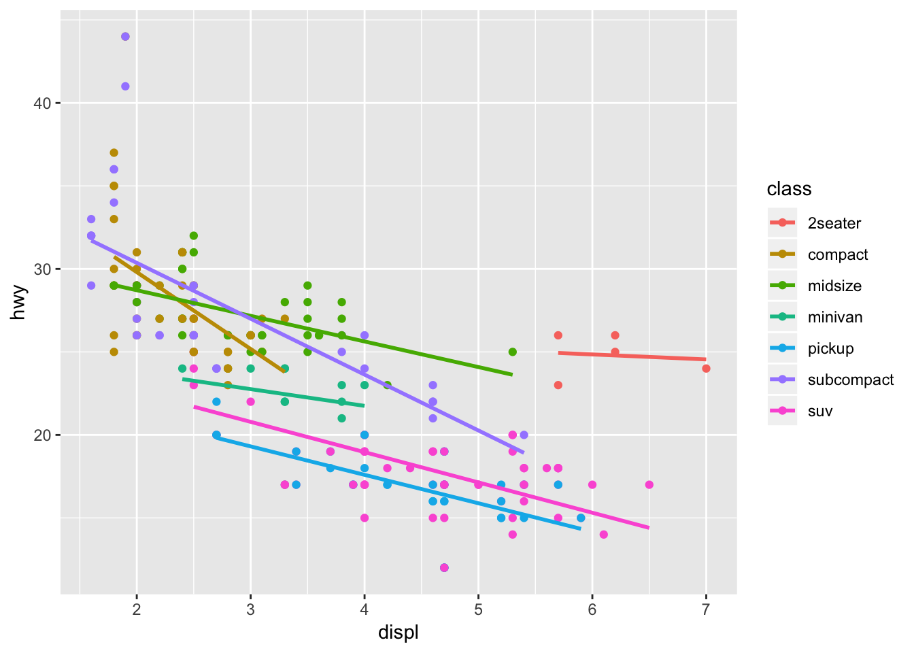
ggplot(data = mpg, mapping = aes(x = displ, y = hwy)) +
geom_point(mapping = aes(color = class)) +
geom_smooth(method="lm", color="black")## `geom_smooth()` using formula 'y ~ x'
ggplot(data = mpg, mapping = aes(x = displ, y = hwy)) +
geom_point(mapping = aes(color = class)) +
geom_smooth(method="lm", aes(x = displ, y = hwy, col=class), se=F)## `geom_smooth()` using formula 'y ~ x'
You can filter data within the ggplot function (you have also have
loaded dplyr or tidyverse library to use the
filter() function though).
ggplot(data = filter(mpg, class!="2seater"), mapping = aes(x = displ, y = hwy)) +
geom_point(mapping = aes(color = class)) +
geom_smooth(method="lm", aes(x = displ, y = hwy, col=class), se=F)## `geom_smooth()` using formula 'y ~ x'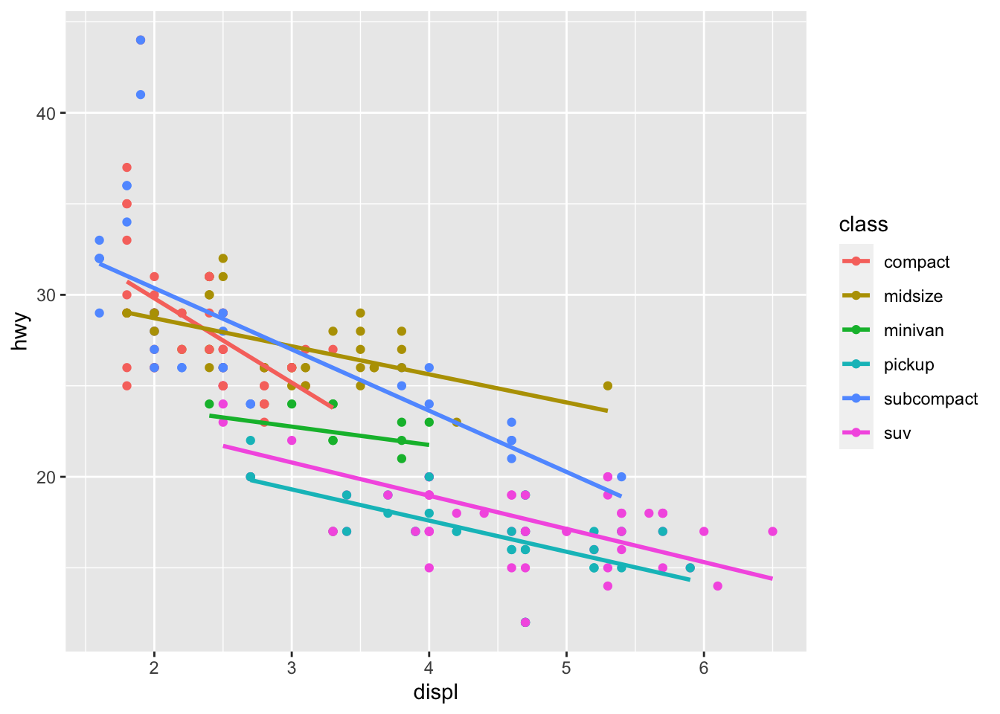
5. Making adjustments with additional specifications
Let’s start a new plot, using the “drive type” (4WD, front-wheel, rear-wheel) as the grouping variable:
ggplot(data = mpg, mapping = aes(x = displ, y = hwy)) +
geom_point(mapping = aes(color = drv)) +
geom_smooth(method="lm", aes(x = displ, y = hwy, color=drv), se=F)## `geom_smooth()` using formula 'y ~ x'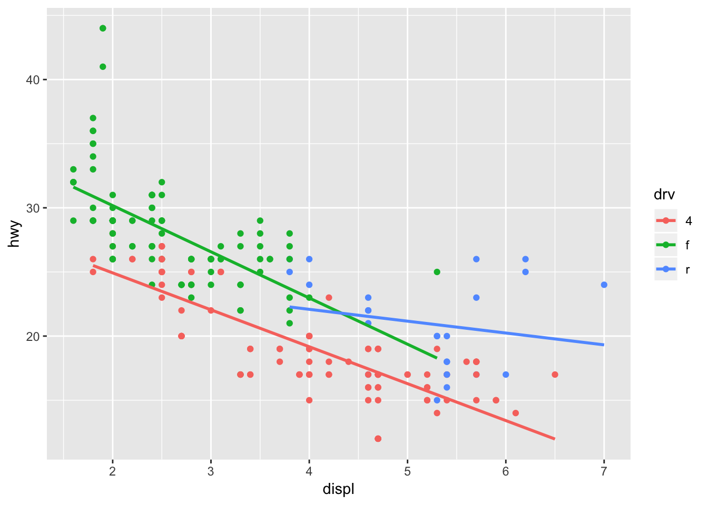
Now make adjustments to the axis labels
ggplot(data = mpg, mapping = aes(x = displ, y = hwy)) +
geom_point(mapping = aes(color = drv)) +
geom_smooth(method="lm", aes(x = displ, y = hwy, color=drv), se=F)+
labs(x="Engine Displacement", y="Highway Miles Per Gallon")## `geom_smooth()` using formula 'y ~ x'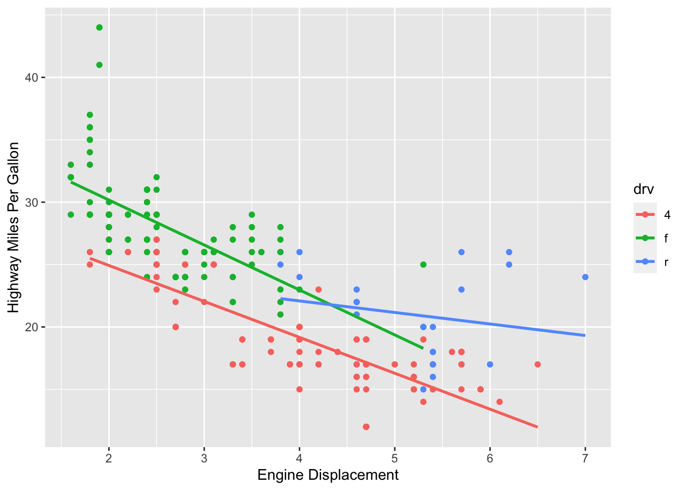
changing color palette using scale_color
Using ColorBrewer
ggplot(data = mpg, mapping = aes(x = displ, y = hwy)) +
geom_point(mapping = aes(color = drv)) +
geom_smooth(method="lm", aes(x = displ, y = hwy, color=drv), se=F)+
labs(x="Engine Displacement", y="Highway Miles Per Gallon") +
scale_color_brewer(palette="Set2", labels=c("4WD", "front-wheel", "rear-wheel"))## `geom_smooth()` using formula 'y ~ x'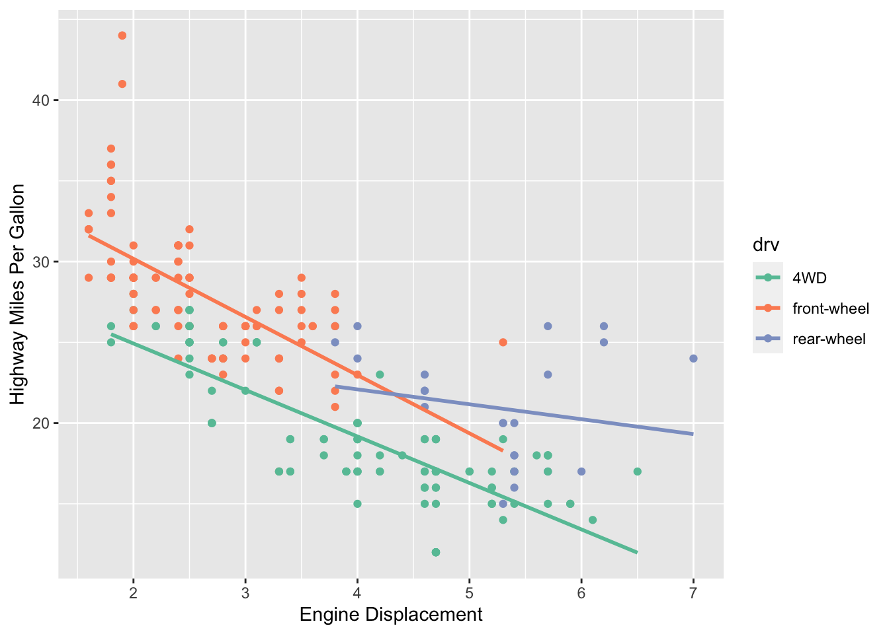
Using custom sets of colors
ggplot(data = mpg, mapping = aes(x = displ, y = hwy)) +
geom_point(mapping = aes(color=drv, shape = drv)) +
geom_smooth(method="lm", aes(x = displ, y = hwy, color=drv), se=F)+
labs(x="Engine Displacement", y="Highway Miles Per Gallon") +
scale_color_manual(values=c("4"='tomato', "f"='slateblue', "r"='darkgreen'), labels=c("4WD", "front-wheel", "rear-wheel"))## `geom_smooth()` using formula 'y ~ x'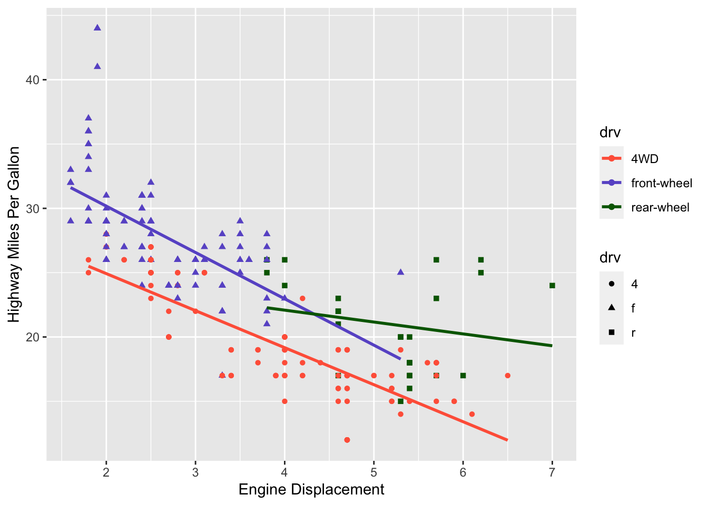
###Faceting
ggplot(data = mpg, mapping = aes(x = displ, y = hwy)) +
geom_point(mapping = aes(color=drv, shape = drv)) +
geom_smooth(method="lm", aes(x = displ, y = hwy, color=drv), se=F)+
labs(x="Engine Displacement", y="Highway Miles Per Gallon") +
scale_color_manual(values=c("4"='tomato', "f"='slateblue', "r"='darkgreen')) +
facet_wrap(~drv)## `geom_smooth()` using formula 'y ~ x'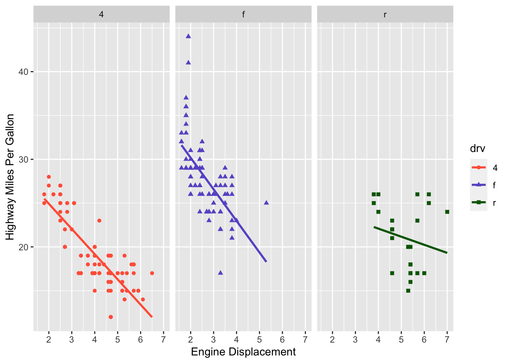
ggplot(data = mpg, mapping = aes(x = displ, y = hwy)) +
geom_point(mapping = aes(color=drv, shape = drv)) +
geom_smooth(method="lm", aes(x = displ, y = hwy, color=drv), se=F)+
labs(x="Engine Displacement", y="Highway Miles Per Gallon") +
scale_color_manual(values=c("4"='tomato', "f"='slateblue', "r"='darkgreen')) +
facet_wrap(~drv, ncol=2)## `geom_smooth()` using formula 'y ~ x'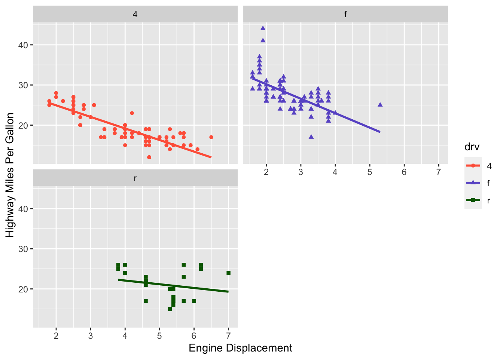
Background
Playing around with themes
ggplot(data = mpg, mapping = aes(x = displ, y = hwy)) +
geom_point(mapping = aes(color = drv)) +
geom_smooth(method="lm", aes(x = displ, y = hwy, color=drv), se=F)+
labs(x="Engine Displacement", y="Highway Miles Per Gallon") +
scale_color_brewer(palette="Set2", labels=c("4WD", "front-wheel", "rear-wheel")) +
theme_classic()## `geom_smooth()` using formula 'y ~ x'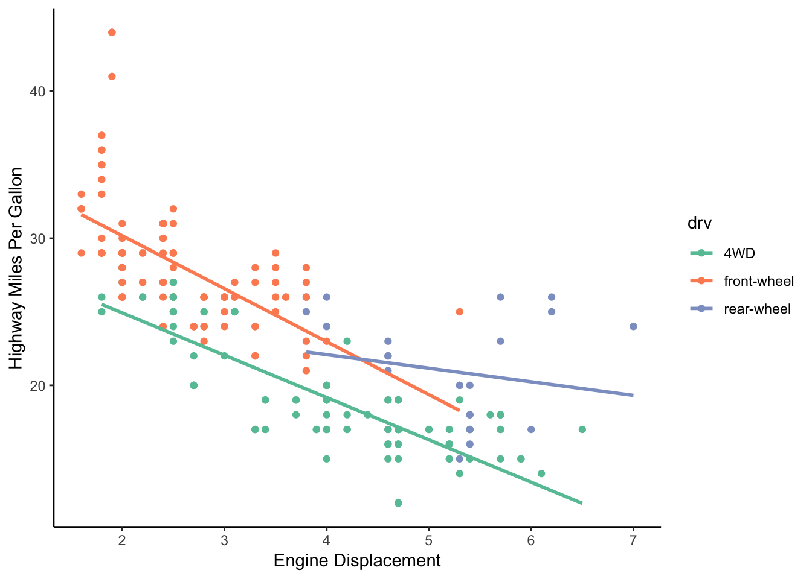
Customizing the panel, v1
ggplot(data = mpg, mapping = aes(x = displ, y = hwy)) +
geom_point(mapping = aes(color = drv)) +
geom_smooth(method="lm", aes(x = displ, y = hwy, color=drv), se=F)+
labs(x="Engine Displacement", y="Highway Miles Per Gallon") +
scale_color_brewer(palette="Set2", labels=c("4WD", "front-wheel", "rear-wheel")) +
theme(panel.background = element_blank(), panel.border = element_rect(fill=NA))## `geom_smooth()` using formula 'y ~ x'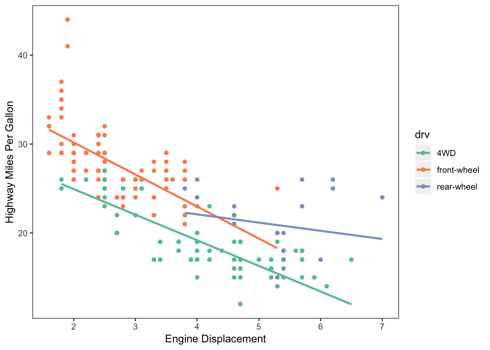
Customizing the panel, v2
ggplot(data = mpg, mapping = aes(x = displ, y = hwy)) +
geom_point(mapping = aes(color = drv)) +
geom_smooth(method="lm", aes(x = displ, y = hwy, color=drv), se=F)+
labs(x="Engine Displacement", y="Highway Miles Per Gallon") +
scale_color_brewer(palette="Set2", labels=c("4WD", "front-wheel", "rear-wheel")) +
theme(panel.grid =element_blank(), panel.border = element_rect(fill=NA), panel.background = element_rect(fill="lightyellow"))## `geom_smooth()` using formula 'y ~ x'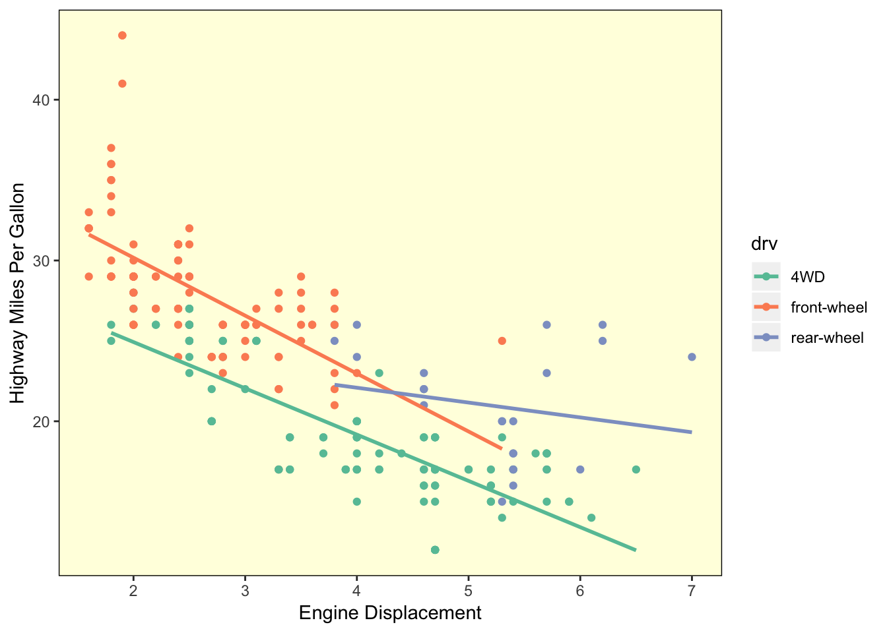